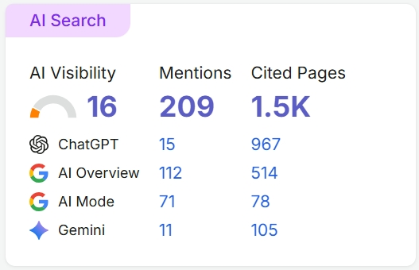
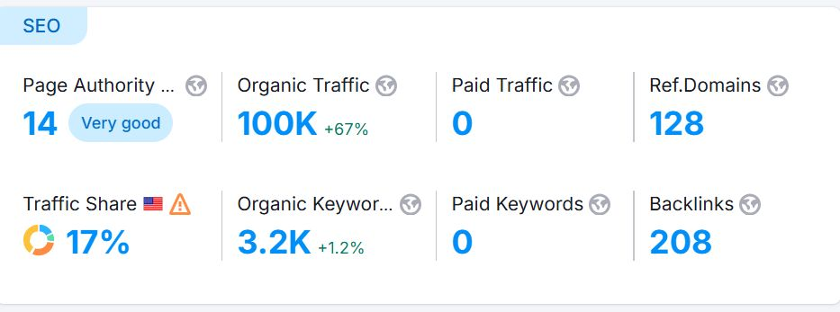

Acquire · LootBarEstablished result
Search-led acquisition
Turned organic gaming demand into measurable customer acquisition.
100K+Organic visits
900+Leads generated


View strategy
- Search demand, intent and SERP opportunity identification
- Intent-to-conversion mapping and conversion pathway
- AEO query decomposition with follow-up-question coverage
- Fresh, extractable factual information for GEO